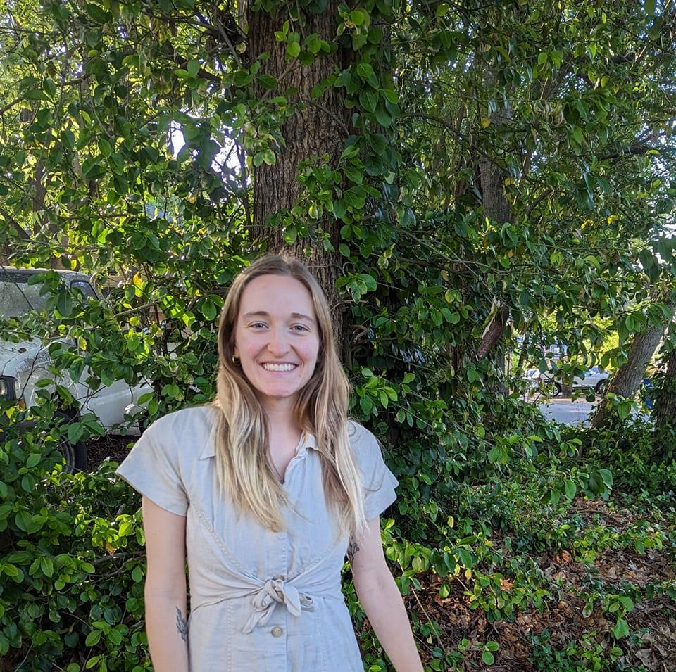
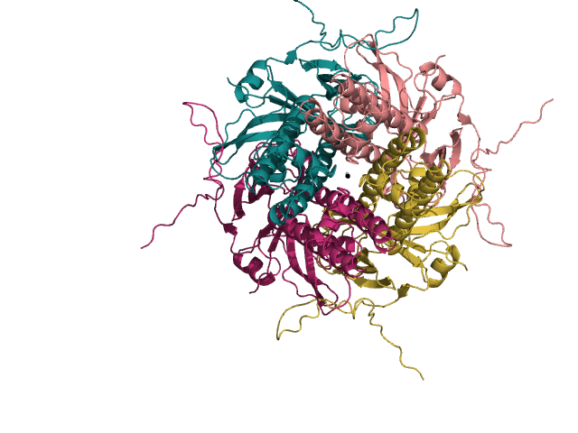

Hello, I am Emily Yaklich!
I am currently a second year graduate student in the Department of Plant Biology at the
University of Georgia. I obtained my B.S. in Genetics, Cell Biology, and Development at
the University of Minnesota and subsequently spent three years at the National Institutes
of Health (NIH) studying symmetry in 3D protein structures using mathematical software to study biological data, also known as bioinformatics.
An example of a top view 3D structure of a potassium channel is pictured here:

My strong background in genetics and bioinformatics has set me up wonderfully to study how sunflowers
respond to different environmental conditions in my graduate program using genomics and transcriptomics.
Also, getting to work with beautiful sunflowers means I draw them any chance I get (using the computer, of course):

In my free time I enjoy running, biking, and hiking (basically anything outdoors)!
Projects
I am sharing some examples of projects that I have worked on whether part of an academic course or in my free time.
Machine learning model to predict transmembrane protein identity based on sequence features
Machine learning models can be valuable tools for protein prediction, specifically, which regions
of a protein are embedded in the cell membrane or not. I created a model that will be able to
classify if a protein sequence is transmembrane (TM) or in the cytosol. This model can predict
TM membership with ~93% accuracy. The purpose of creating this model was to build a foundation
and familiarize myself with machine learning protocols. I can now compare this model to already
existing TM prediction algorithms and then further improve this model to possibly classify
specific TM helix regions and/or membrane protein interfaces in my own work. This project was
completed as part of a machine learning course.
GitHub repository
Introduction to Python Tutorial Materials
In collaboration with my colleagues, we created an Intro to Python tutorial.
This tutorial outlines some basic concepts and Python use cases in a set of Jupyter Notebooks that can
be worked through as a group or individually.
GitHub repository
Wikipedia Page on C19orf44 (a protein of unknown function)
Chromosome 19 open reading frame 44 (C19orf44) is a protein of unknown function. As part of
an undergraduate computational biology course, I performed a web-based analysis of this
protein in order to gather information on the C19orf44 gene, protein, expression
locations and levels, homology and evolution, and protein-protein interactions.
Wikipedia page
Morris Hoeft Group Website
Built the website for Morris Hoeft Group LLC.
Website
This Website!
I have been building my personal website as a hobby in my free time.
GitHub repository
Publications
Staritzbichler R, Yaklich E, Sarti E, Ristic N, Hildebrand PW, Forrest LR, AlignMe: an update of
the web server for alignment of membrane protein sequences. 2022. Nucleic Acids Research.
doi: 10.1093/nar/gkac391
The AlignMe webserver is specially designed for the accurate amino acid sequence alignment of membrane
proteins. Membrane proteins are notoriously difficult to align due to strong evolutionary divergence and
low amino acid complexity due to hydrophoibc residues within the membrane. The AlignMe server has been around for about a decade,
but updates to this release include multiple submissions, structural visualization, and anchoring of
residues. The anchoring of residues allows the user to constrain specific amino acids in the sequence
alignment based on biochemical, biophysical, or genetic data within the sequence alignment. These updates to
the AlignMe server make it more user friendly and continues to be a useful resource for the membrane
protein community.
Link to article
Staritzbichler R, Sarti E, Yaklich E, Aleksandrova A, Stamm M, Khafizov K, Forrest LR. Refining
pairwise sequence alignments of membrane proteins by the incorporation of anchors. 2021. PLoS ONE
16(4): e0239881. doi: 10.1371/journal.pone.0239881.
Membrane proteins are encoded by 20- 30% of genomes and have diverse functions including signaling, scaffolding, and transporting molecules. Aligning sequences of membrane proteins can be difficult
due to the complex hydrophobic membrane environment and low sequence identity. AlignMe
(www.bioinfo.mpg.de/AlignMe/) is a program optimized for aligning membrane proteins allowing the
input of evolutionary, transmembrane, and secondary structure predictions. Additionally, AlignMe
allows for the incorporation of biochemical/biophysical data by using a restraint to match positions
between two sequences known as an anchor. Historically, this biochemical information is added
manually after the sequence alignment is complete, but the use of anchors allows non-anchored
residues to be aligned following the AlignMe algorithm. Incorporating biochemical data through
the use of anchors in AlignMe is an efficient and reproducible way of modifying alignments
of membrane protein sequences.
Link to article